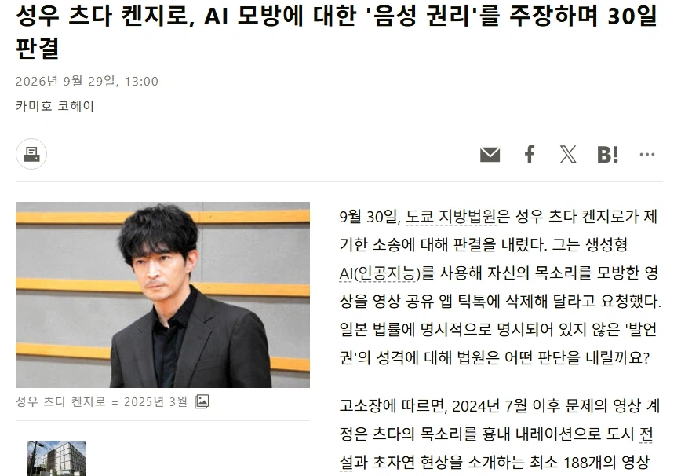
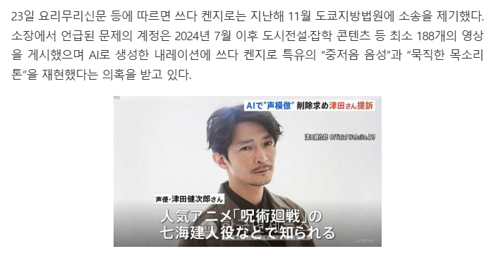
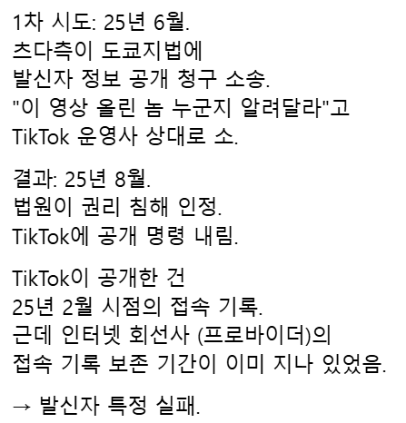
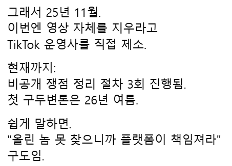
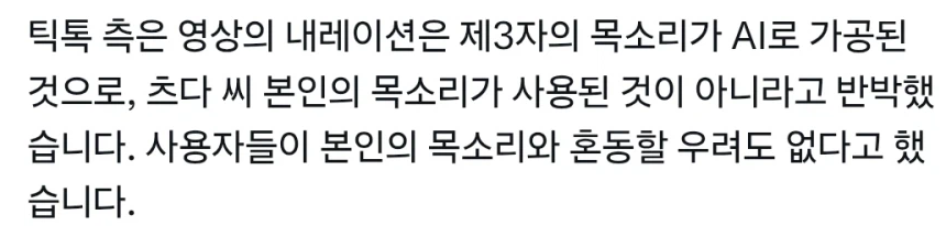
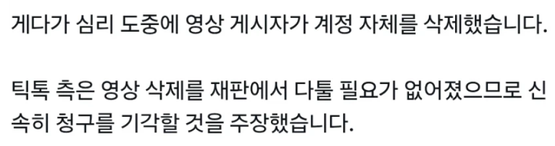
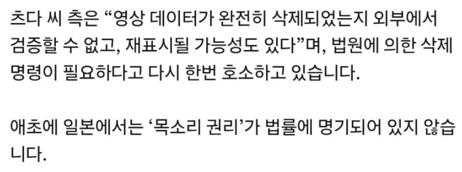
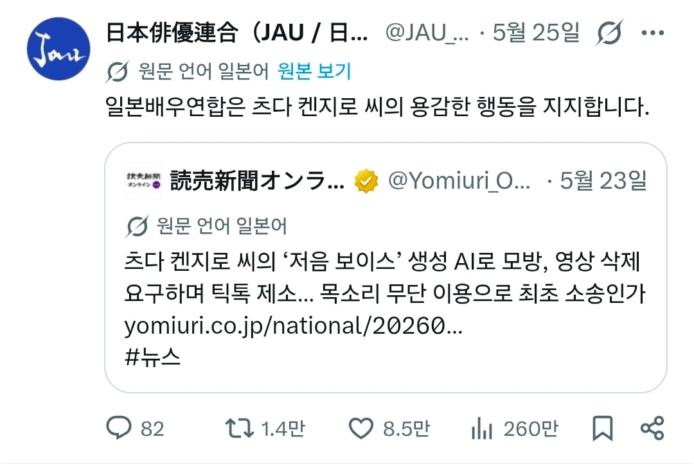
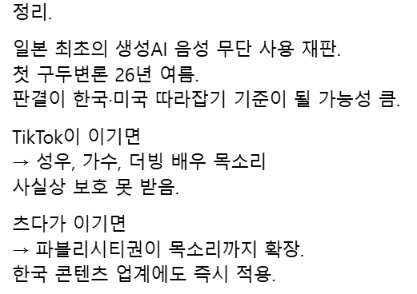

약 5월달에 츠다 켄지로라는 배우/ 성우 (주술회전 나나미, 유희왕 카이바 등) 가
틱톡을 상대로 AI 목소리 모방 영상 방치건으로 고소를 날렸고
그 판결이 내일 30일에 나옴
이게 단순 일본뿐만 아니라 전세계에서도 주목을 받는 사건인데
일단 이게 뭔 사건이냐면

2024년 7월쯤 틱톡의 한 사용자가 약 188개 영상을
츠다 켄지로 느낌의 AI 생성 보이스로 도시전설 소개 영상을 만들었고

츠다 켄지로가 이를 확인 후
이건 내 목소리다. 마치 내가 나레이션을 한 것처럼 혼동을 준다. 그리고 그 게시자는 수익을 올리고 있지 않냐.
댓글도 츠다 켄지로 목소리다 라는 댓글이 대부분이니 이건 내 목소리를 학습한 AI 목소리가 맞다.
이에 틱톡에게 이 사용자 정보를 알려달라며 틱톡 운영자를 상대로 소송했지만
접속 기록 보존 기간이 지나있어 결국 찾지 못했음.

그래서 츠다는 틱톡에게 직접 영상 삭제를 요청하며 이런 불법 복제물 방치로 소송을 제기했고

틱톡 측은
엥? 너 목소리가 아니고 그냥 가공한 AI 목소리임.
그리고 너 목소리랑 혼동될 이유도 없음. 이라며 거부함

그리고 심리 도중 영상 게시했던 사람이 계정을 삭제해 버려서
틱톡 : 아니 기존에 올리던 사람 삭튀하고 갔는데, 이제 얘기해봤자 의미 없지 않냐? 그러니 청구를 기각해라
라는 입장이었음

츠다 켄지로 측은
아니 그게 완전히 삭제됐는지 그걸 우리가 어떻게 아냐. 법원에 의한 삭제 명령이 필요하다
며 주장하였고, 이렇게 내일 판결 결과가 나오는 것

근데 이게 단순 츠다 켄지로 vs 틱톡의 싸움이 아니라
이 사건이 알려지고 일본의 많은 성우, 배우들이 츠다 켄지로 편을 들고 있어서 생각보다 주목도가 큼

왜냐면
개인의 음성 정체성을 AI 복제로부터 지키려는 일본 첫 소송이기 때문에
이 판결이 다른 나라에도 영향을 끼칠 가능성이 매우 높음.
만약 츠다 켄지로가 판결에서 진다면
앞으로 배우/성우 목소리를 AI로 학습해 사용해도 상관없다는 판례가 있으니 이런 사례들이 더욱 많아질거임
과연 내일 어떤 결과가 나올지
궁금한게 진짜 똑같이해서 성대모사 한 척하면 어떻게 되는거임?